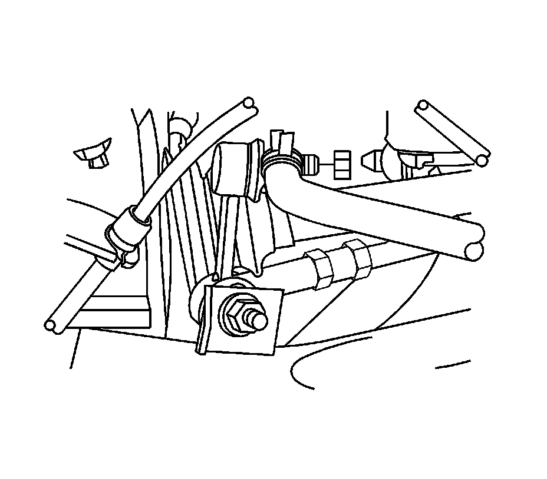
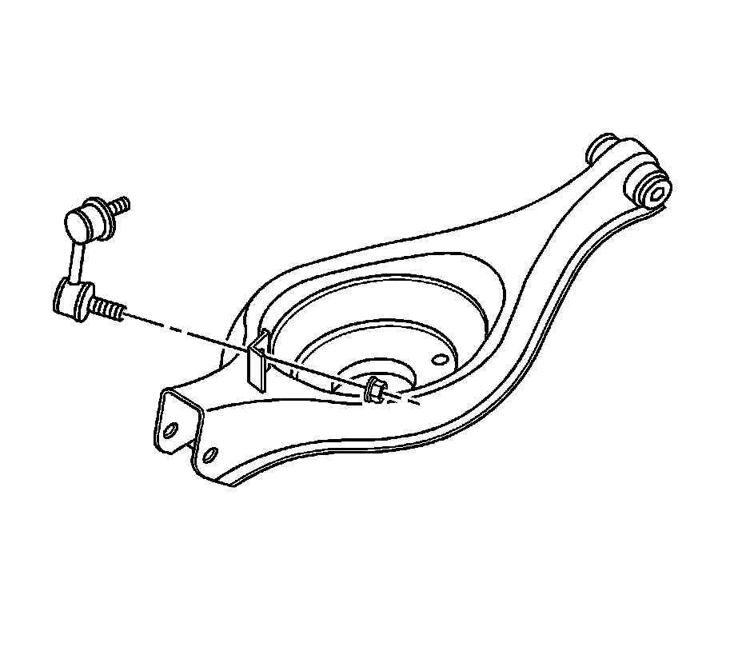

Rear Suspension
Stabilizer Shaft Link Replacement
Removal Procedure

Notice: The ball stud must not rotate during disassembly or reassembly. Hand tools must be used to keep the ball stud from rotating. If air tools are used and the stud is allowed to rotate, damage to the ball stud and/or stud mounting hole may occur.
1. Raise and support the vehicle. Refer to Lifting and Jacking the Vehicle (Service and Repair) .
2. Remove the tire and wheel. Refer to Tire and Wheel Removal and Installation (Service and Repair) .
Important: Hold the shaft link stud with a hex tool to prevent damage to the link seal.
3. Remove the stabilizer shaft link retaining nuts.
4. Remove the stabilizer shaft link from the stabilizer shaft.

5. Remove the stabilizer shaft link from the lower control arm.
Installation Procedure
1. Install the stabilizer shaft link to the lower control arm.
2. Install the stabilizer shaft link to the stabilizer shaft.
Notice: Refer to Fastener Notice (Fastener Notice) .
Important: Hold the shaft link stud with a hex tool to prevent damage to the link seal.
3. Install the stabilizer shaft link retaining nuts.
Tighten the nuts to 90 N.m (67 lb ft).
4. Install the tire and wheel . Refer to Tire and Wheel Removal and Installation (Service and Repair) .
5. Lower the vehicle.